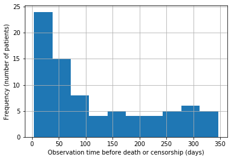
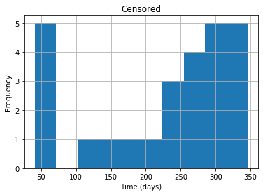
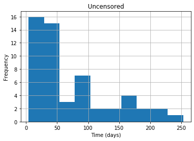
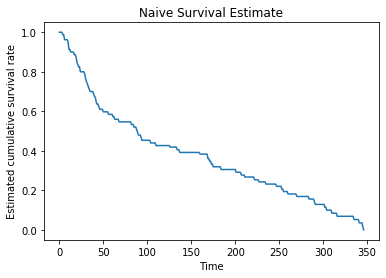
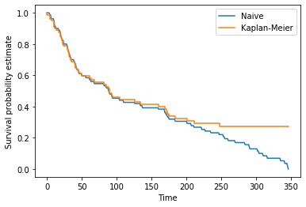
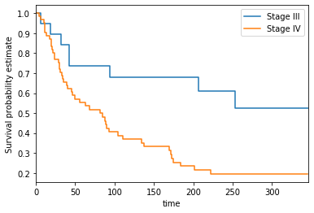

Survival Estimates that Vary with Time
Welcome to the third assignment of Course 2. In this assignment, we’ll use Python to build some of the statistical models we learned this past week to analyze surivival estimates for a dataset of lymphoma patients. We’ll also evaluate these models and interpret their outputs. Along the way, you will be learning about the following:
- Censored Data
- Kaplan-Meier Estimates
- Subgroup Analysis
Outline
1. Import Packages
We’ll first import all the packages that we need for this assignment.
lifelinesis an open-source library for data analysis.numpyis the fundamental package for scientific computing in python.pandasis what we’ll use to manipulate our data.matplotlibis a plotting library.
1 | import lifelines |
2. Load the Dataset
Run the next cell to load the lymphoma data set.
1 | data = load_data() |
As always, you first look over your data.
1 | print("data shape: {}".format(data.shape)) |
data shape: (80, 3)
| Stage_group | Time | Event | |
|---|---|---|---|
| 0 | 1 | 6 | 1 |
| 1 | 1 | 19 | 1 |
| 2 | 1 | 32 | 1 |
| 3 | 1 | 42 | 1 |
| 4 | 1 | 42 | 1 |
The column Time states how long the patient lived before they died or were censored.
The column Event says whether a death was observed or not. Event is 1 if the event is observed (i.e. the patient died) and 0 if data was censored.
Censorship here means that the observation has ended without any observed event.
For example, let a patient be in a hospital for 100 days at most. If a patient dies after only 44 days, their event will be recorded as Time = 44 and Event = 1. If a patient walks out after 100 days and dies 3 days later (103 days total), this event is not observed in our process and the corresponding row has Time = 100 and Event = 0. If a patient survives for 25 years after being admitted, their data for are still Time = 100 and Event = 0.
3. Censored Data
We can plot a histogram of the survival times to see in general how long cases survived before censorship or events.
1 | data.Time.hist(); |

1 | data["Event"].unique() |
array([1, 0])
Exercise 1
In the next cell, write a function to compute the fraction ($\in [0, 1]$) of observations which were censored.
- Summing up the
'Event'column will give you the number of observations where censorship has NOT occurred.
1 | # UNQ_C1 (UNIQUE CELL IDENTIFIER, DO NOT EDIT) |
1 | print(frac_censored(data)) |
0.32499999999999996
Expected Output:
1 | 0.325 |
Run the next cell to see the distributions of survival times for censored and uncensored examples.
1 | df_censored = data[data.Event == 0] |


4. Survival Estimates
We’ll now try to estimate the survival function:
To illustrate the strengths of Kaplan Meier, we’ll start with a naive estimator of the above survival function. To estimate this quantity, we’ll divide the number of people who we know lived past time $t$ by the number of people who were not censored before $t$.
Formally, let $i$ = 1, …, $n$ be the cases, and let $t_i$ be the time when $i$ was censored or an event happened. Let $e_i= 1$ if an event was observed for $i$ and 0 otherwise. Then let $X_t = \{i : T_i > t\}$, and let $M_t = \{i : e_i = 1 \text{ or } T_i > t\}$. The estimator you will compute will be:
Exercise 2
Write a function to compute this estimate for arbitrary $t$ in the cell below.
1 | # UNQ_C2 (UNIQUE CELL IDENTIFIER, DO NOT EDIT) |
1 | print("Test Cases") |
Test Cases
Sample dataframe for testing code:
Time Event
0 5 0
1 10 1
2 15 0
Test Case 1: S(3)
Output: 1.0, Expected: 1.0
Test Case 2: S(12)
Output: 0.5, Expected: 0.5
Test Case 3: S(20)
Output: 0.0, Expected: 0.0
Test case 4: S(5)
Output: 0.5, Expected: 0.5
In the next cell, we will plot the naive estimator using the real data up to the maximum time in the dataset.
1 | max_time = data.Time.max() |

Exercise 3
Next let’s compare this with the Kaplan Meier estimate. In the cell below, write a function that computes the Kaplan Meier estimate of $S(t)$ at every distinct time in the dataset.
Recall the Kaplan-Meier estimate:
where $t_i$ are the events observed in the dataset and $d_i$ is the number of deaths at time $t_i$ and $n_i$ is the number of people who we know have survived up to time $t_i$.
- Try sorting by Time.
- Use pandas.Series.unique
- If you get a division by zero error, please double-check how you calculated `n_t`
1 | # UNQ_C3 (UNIQUE CELL IDENTIFIER, DO NOT EDIT) |
1 | print("TEST CASES:\n") |
TEST CASES:
Test Case 1
Test DataFrame:
Time Event
0 5 0
1 10 1
2 15 0
Output:
Event times: [0, 5, 10, 15], Survival Probabilities: [1.0, 1.0, 0.5, 0.5]
Expected:
Event times: [0, 5, 10, 15], Survival Probabilities: [1.0, 1.0, 0.5, 0.5]
Test Case 2
Test DataFrame:
Time Event
0 2 0
1 15 0
2 12 1
3 10 1
4 20 1
Output:
Event times: [0, 2, 10, 12, 15, 20], Survival Probabilities: [1.0, 1.0, 0.75, 0.5, 0.5, 0.0]
Expected:
Event times: [0, 2, 10, 12, 15, 20], Survival Probabilities: [1.0, 1.0, 0.75, 0.5, 0.5, 0.0]
Now let’s plot the two against each other on the data to see the difference.
1 | max_time = data.Time.max() |

Question
What differences do you observe between the naive estimator and Kaplan-Meier estimator? Do any of our earlier explorations of the dataset help to explain these differences?
5. Subgroup Analysis
We see that along with Time and Censor, we have a column called Stage_group.
- A value of 1 in this column denotes a patient with stage III cancer
- A value of 2 denotes stage IV.
We want to compare the survival functions of these two groups.
This time we’ll use the KaplanMeierFitter class from lifelines. Run the next cell to fit and plot the Kaplan Meier curves for each group.
1 | S1 = data[data.Stage_group == 1] |

Let’s compare the survival functions at 90, 180, 270, and 360 days
1 | survivals = pd.DataFrame([90, 180, 270, 360], columns = ['time']) |
1 | survivals |
| time | Group 1 | Group 2 | |
|---|---|---|---|
| 0 | 90 | 0.736842 | 0.424529 |
| 1 | 180 | 0.680162 | 0.254066 |
| 2 | 270 | 0.524696 | 0.195436 |
| 3 | 360 | 0.524696 | 0.195436 |
This makes clear the difference in survival between the Stage III and IV cancer groups in the dataset.
5.1 Bonus: Log-Rank Test
To say whether there is a statistical difference between the survival curves we can run the log-rank test. This test tells us the probability that we could observe this data if the two curves were the same. The derivation of the log-rank test is somewhat complicated, but luckily lifelines has a simple function to compute it.
Run the next cell to compute a p-value using lifelines.statistics.logrank_test.
1 | def logrank_p_value(group_1_data, group_2_data): |
0.009588929834755544
If everything is correct, you should see a p value of less than 0.05, which indicates that the difference in the curves is indeed statistically significant.
Congratulations!
You’ve completed the third assignment of Course 2. You’ve learned about the Kaplan Meier estimator, a fundamental non-parametric estimator in survival analysis. Next week we’ll learn how to take into account patient covariates in our survival estimates!